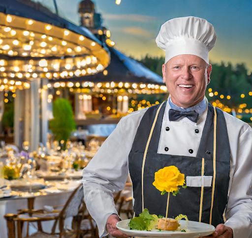

Mr. Strid


Mr. Strid, den mästerlige vinnaren av Masterchef Sverige, är inte bara en kulinarisk expert - han är en trollkarl vid spisen. Hans mat är mer än bara näring; den är en magisk upplevelse som fångar och förtrollar dina sinnen. Med sin slogan "smaker som trollbinder dig" lovar han inget mindre än en kulinarisk föreställning som tar dig med på en resa genom smakens underbara värld. Som grundare av flera restauranger under namnet Chef Tingeling har Mr. Strid skapat platser där maten inte bara serveras, utan där den upplevs.
För närvarande hittar man honom dock i köket på Chef Tingeling på Storgatan i Stockholm. Det är här han förverkligar sin vision om matlagning som en konstform och varje tallrik som en palett för hans kulinariska kreativitet. På Chef Tingeling på Storgatan får gästerna uppleva en fusion av tradition och innovation, där varje rätt är noggrant komponerad för att föra fram de mest magiska smakerna. Från den första tuggan till den sista är varje måltid en förtrollande resa som tar dig med på en kulinarisk upplevelse utöver det vanliga. Med Mr. Strid vid rodret kan du vara säker på att varje besök på Chef Tingeling blir en minnesvärd och smakrik upplevelse.
"Mat är inte bara en måltid, det är en resa genom smaker och känslor som förtrollar och förenar oss alla."
Mr. Strid